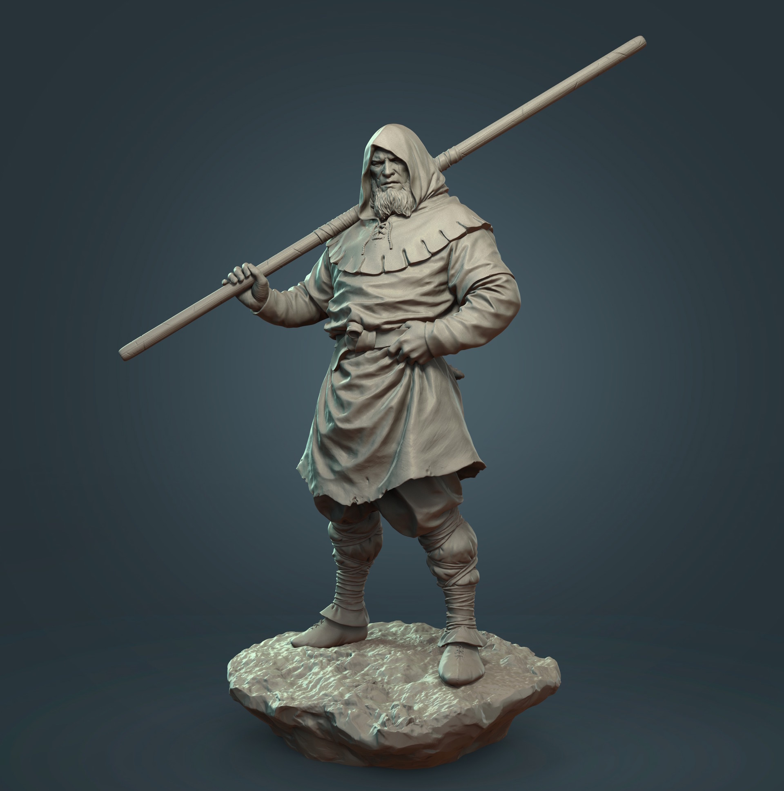

About us

Get acquainted & set up a personal Get acquainted & set up the software interface. Features of commonly used tools for sculpting/sculpting

How to create Brush/Alpha to meet project requirements Draw Simple Textures in Zbrush Incorporate other 3D software to meet the production process
Principles & steps when Scupt Learn the basics of the human body Experience scupt different materials such as: Metal, Wood, Fabric, ...